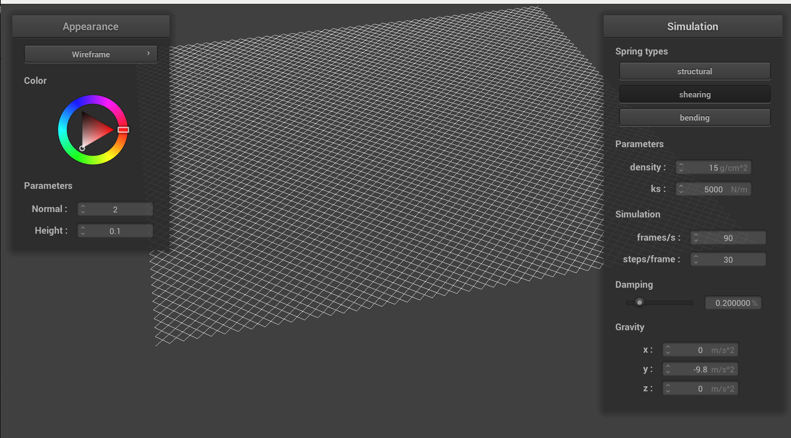
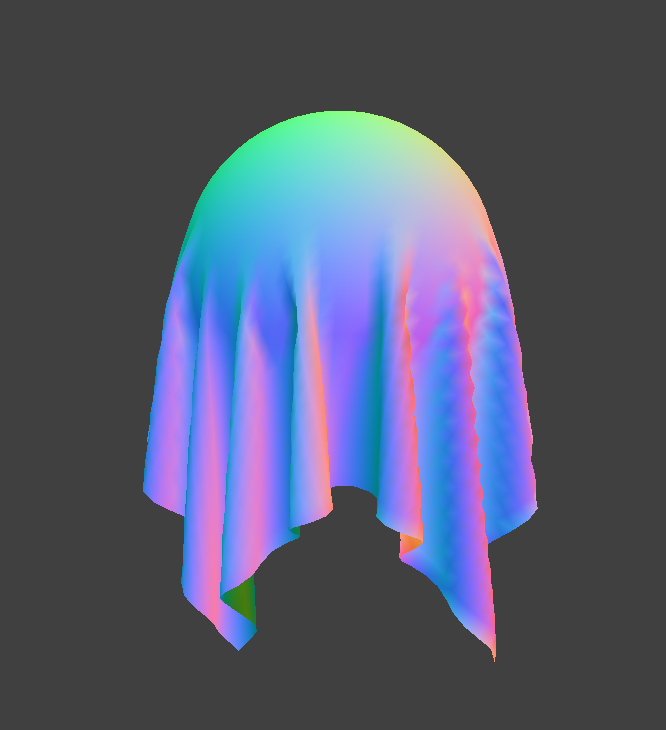
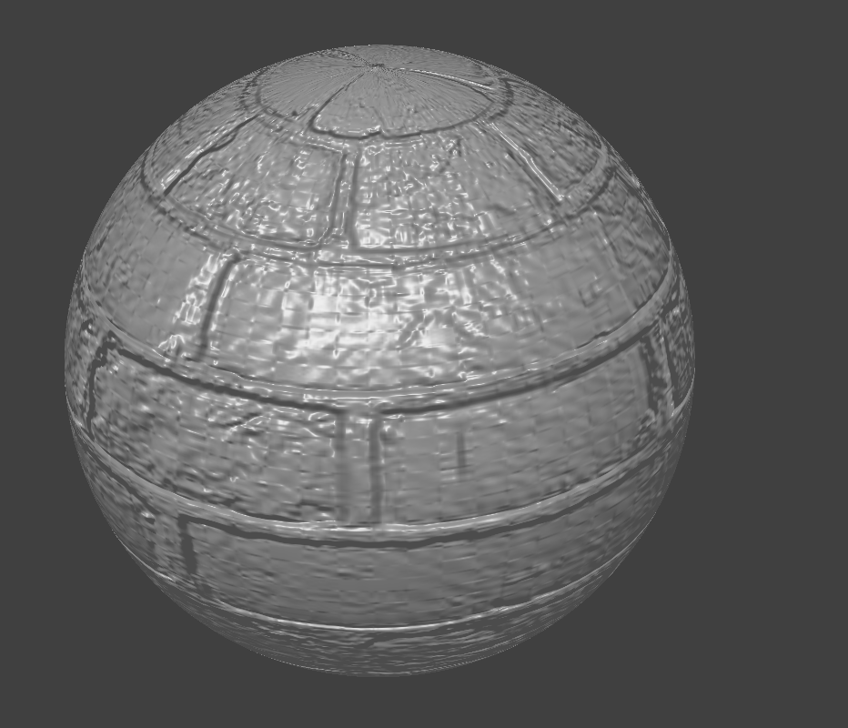

CS184/284A Spring 2025 Homework 4 Write-Up
Link to webpage: https://cal-cs184-student.github.io/hw-webpages-ishan/hw4/index.html
Link to GitHub repository: https://github.com/cal-cs184-student/sp25-hw4-ishan-amin
Overview
In this homework, we looked at realistic simulation of a cloth interacting with different objects. We first looked at a spring model for a cloth with different spring types meant to enforce the cloth's structural integrity. We then looked at how to simulate the cloth, as well as how to handle collisions with other objects, and self collisions. Finally, we looked at different ways of shading the cloth, as well as texture, displacement, and bump mapping, as well as environment mapped reflections. The assignment gave me a better understanding of simulation and shading in computer graphics.Part 1: Masses and springs
Visualization of the cloth wireframe with different constraints constraints:
|
|

|
|
|
|
Part 2: Simulation via numerical integration
We experimented with different simulation parameters and observed their effects on cloth behavior. Below are screenshots and observations for varying spring constant ks, damping, and density.
Varying Spring Constant (ks)
ks = 0: The cloth forms a perfect catenary shape, with no spring resistance—no bumps form. |
ks = 5000 : The cloth hangs naturally with bumps and an arc due to spring interactions. |
ks = 50,000: The cloth appears much more taut and the top fold is lifted higher up, forming a less pronounced arc. |
|
Varying Damping
|
|
|
Varying Density
|
|
|
Diferent Scene: 4 Pins
|
|
Part 3: Handling Collisions
To implement collision handling, I updated the simulate function to call the collide method on each collision object for every point mass.
Collision Handling Logic
- Sphere: I check if a point mass lies inside the sphere (distance from center < radius). If so, I compute the direction from the sphere center to the point, and use this to calculate a tangent point on the sphere's surface. The point mass’s new position is updated to be the previous position plus (1 - f) times the correction vector toward the tangent point.
- Plane: I check if a point mass crossed the plane by detecting a sign flip in the dot product between the normal vector and the displacement vector. If so, I project the point mass onto the plane and use a similar correction vector to resolve the collision.
Cloth Resting on Sphere (scene/sphere.json)
We observe the cloth at rest on the sphere for three different spring constants:

ks = 500: The cloth drapes more tightly around the sphere, as gravity dominates over the spring constant. |
ks = 5000: The default spring constant. |
ks = 50000: The cloth is much stiffer and puffs out noticeably, as the stronger springs can resist the pull of gravity. |
|
Cloth Resting on Plane
Part 4: Handling Self-Collisions
To handle self-collisions, I first implemented a hash_position function, which discretizes the coordinate space into 3D voxels and assigns each point mass to a voxel bin based on its position.
To build the spatial map, I used hash_position to generate a key for each point mass and appended that point mass to a list at that key. During the simulation step, for each point mass, I looked up nearby masses in the same voxel and adjusted its position away from masses that were too close, resolving collisions by applying a small repulsive correction.
After implementing this, the cloth no longer collapsed or folded into itself unrealistically. Below are screenshots showing the cloth at three different stages of self-collision:
Cloth Falling and Folding on Itself
|
|

|
|
|
|
Effect of Varying ks and Density on Self-Collisions
We also varied ks and density to observe how stiffness and mass affect self-collision behavior. When ks is small or the density is large, the cloth becomes more fluid-like and crumples more dramatically. Conversely, with high ks or low density, the cloth behaves more like a stiff fabric or solid, resisting extreme folds.
ks = 50: The cloth folds easily and crumples due to low stiffness. |
ks = 50000: The cloth is more rigid and resists tight folds. |
|
|
|
Part 5: Shaders
Shader programs are small programs that run in parallel on the GPU to process geometry and pixels efficiently. There are two key types:
- Vertex shaders operate on each vertex of a mesh. They can transform vertex positions, modify normals, or compute other geometric values.
- Fragment shaders operate on each pixel (fragment) generated after rasterization. They compute the final color using lighting models, surface properties, and texture data.
Together, the vertex shader sets up the geometry and per-fragment attributes, while the fragment shader uses those attributes to determine lighting and color.
Blinn-Phong Shading Model
The Blinn-Phong shading model simulates light in a computationally cheap way while still being realistic. It consists of 3 terms:
- Ambient: A constant light that affects all surfaces equally, ensuring no area is completely dark.
- Diffuse: Simulates light scattered from rough surfaces, depending on the angle between the light direction and surface normal.
- Specular: Simulates shiny reflections, depending on how closely the view direction aligns with the light’s reflection direction.
Below are renders showing each component individually, as well as the full Blinn-Phong model:
|
|
|
|
|
|
Texture Mapping
We implemented a texture mapping shader and applied a custom Cal logo texture.
Bump Mapping and Displacement Mapping
We implemented both bump mapping and displacement mapping shaders using the same brick texture from the textures directory. Bump mapping perturbs the normals to give the illusion of depth without modifying the geometry, while displacement mapping actually displaces the mesh's vertices and deforms the surface.
Below are results from rendering the sphere with low and high mesh resolution, as well as bump mapping applied to the cloth:
|
|

|
|
|
|
|
|
|
|
|
|
Comparing the two methods:
- Bump mapping does not seem to degrade across mesh resolutions.
-
Displacement mapping creates actual geometry changes, which become more detailed as the mesh resolution increases. At
-o 16 -a 16, sphere looks a lot like a polygon; but at-o 128 -a 128, the sphere is smoother and the deformations are more detailed.
Mirror Shader
We also implemented a mirror shader that reflects the environment. Below are examples on both the cloth and the sphere:
|
|
|